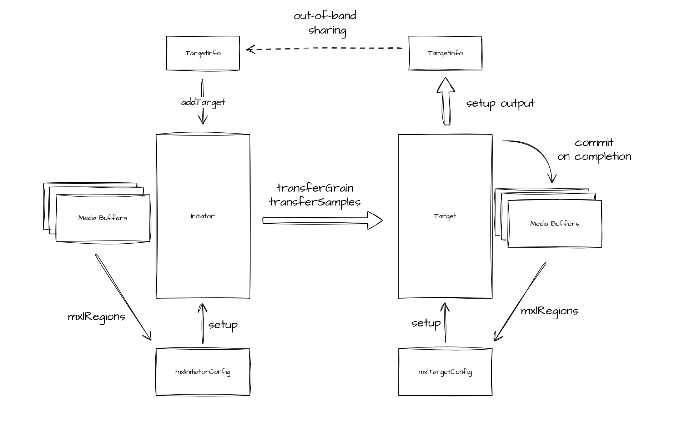
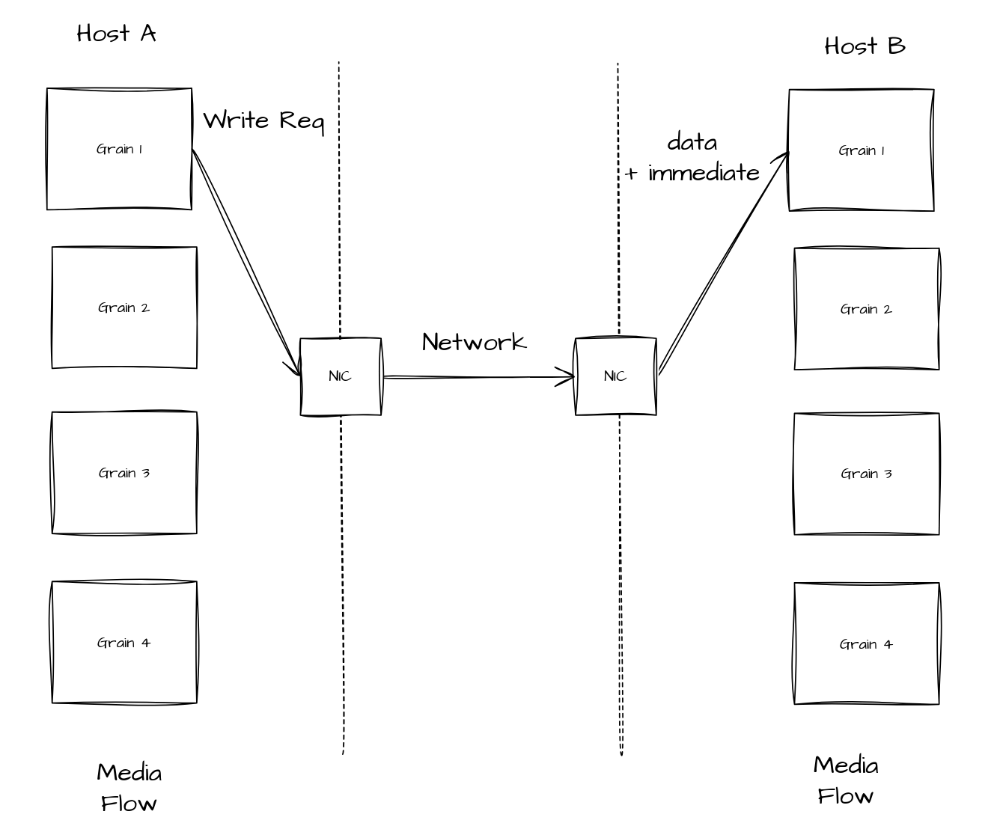
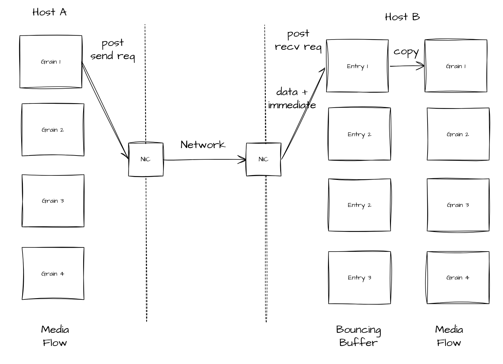
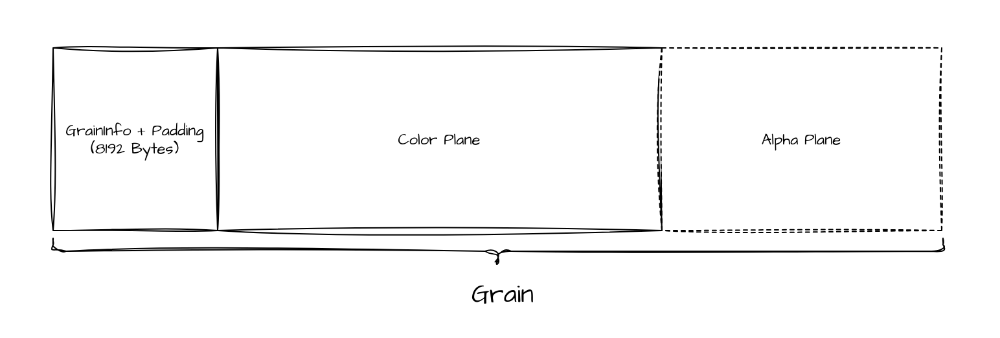
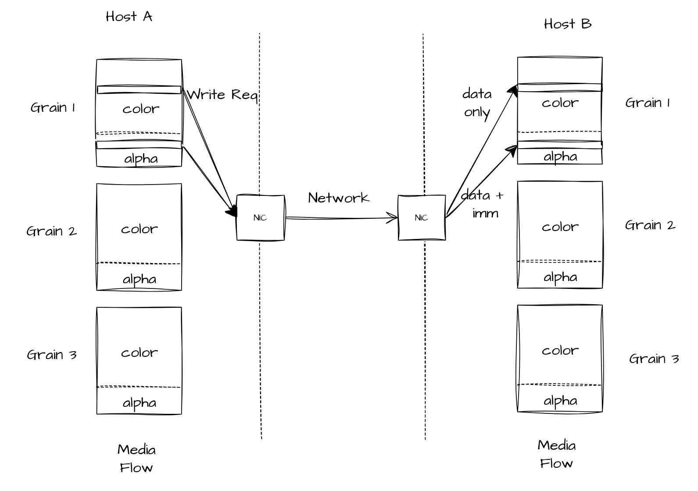
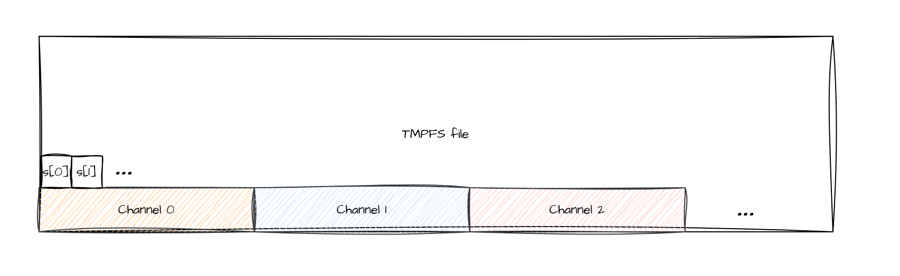
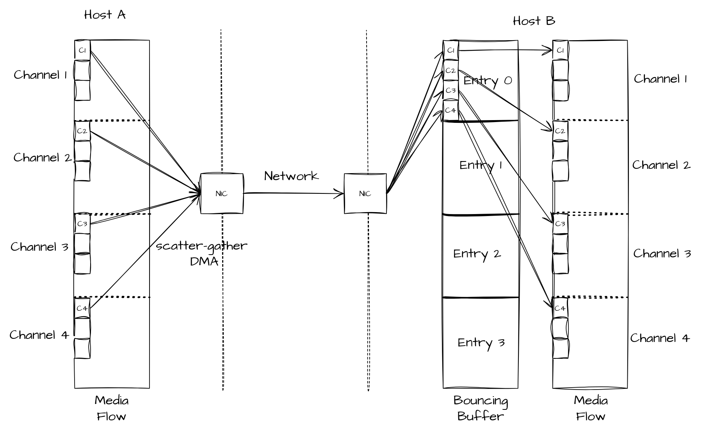

Fabrics
This page presents the details of the libfabric implementation of the Fabrics API. This page assumes familiarity with the MXL Flow API, with asynchronous networking workflows and RDMA. A good place to start would be to read the proposition MXL Inter host memory sharing ‐ Proposition.
1. Requirements
- Support for continuous and discrete flows memory layouts
- Support user media buffers (that follow mxl memory layouts)
- Support both Host and Device memory
- Support different providers
- TCP
- Verbs (RDMA)
- EFA
- Node / Service (ip:port) to establish communication (connected or connection-less)
- Support One-Way transfers (Remote Write)
- Support Two-Way transfers (Send/Recv) as fallback (if One-Way transfers are not supported)
- Support TX/RX message size limits
- Support of using scatter-gather feature while considering scatter-gather list size limits (sge_max).
- Least amount of memory copies possible (ideally zerocopy)
2. Workflow
From a user perspective, here’s the workflow to follow when using the Fabrics API:
The target has “media buffers” that it exposes to an initiator. That initiator also has “media buffers” that it will copy to the target. The user sets up the target, which will generate a TargetInfo. That TargetInfo is shared with the initiator through any out-of-band mechanism. The user sets up the initiator and adds the target using the TargetInfo. The initiator can start transferring grains or samples to the target. When transfers are completed, the target receives a notification with the required information to retrieve which part of the ring buffer was modified. It can use that information to commit to the media buffers.

3. Transfers
To cover all the cases, there are two types of transfers we intend to use:
3.1 Remote Write
As stated in the proposition, the preferred method to use to transfer data is Remote Write. Remote Write allows to modify target’s memory directly without it being involved. In RDMA, we can use “immediate data” to signal the target that a remote write operation occurred on its memory region. Immediate data also allows a user to embed 32-bit user data that will be available at the destination. Libfabric also supports this immediate data feature, and we will use it to communicate specific information to the target. Such information includes grainIndex and slice index for the “Discrete flow”, and head index and count for “Continuous flow”.
Scatter-Gather
Remote Write supports scatter-gather functionality on the source side, allowing the initiator to specify multiple non-contiguous buffers as the source. However, the destination is limited to a single contiguous address, which prevents unpacking the results back into multiple non-contiguous buffers and creates an asymmetry in the transfer operation. To address this problem, we have to use a bouncing buffer on the target side. On completion, the target is responsible for unpacking data back to non-contiguous buffers.
3.2 Send/Recv
There are some cases where the hardware does not support Remote Write. One example of this is some AWS instances that have EFA enabled hardware only have support for Send/Recv transfers. With untagged Send/Recv, the receiver cannot direct an incoming message to a specific buffer as posted receives are consumed in FIFO order. Since the target doesn't know in advance which grain the initiator will send next, it cannot pre-post the grain's final buffer and rely on the data landing there. To land data directly in the correct per-grain buffer one would need tag matching (FI_TAGGED, tag = grain index), otherwise a single bounce buffer is used and the grain index is recovered from the immediate data, which results in an extra copy.
4. Communication establishment (connected and connection-less)
4.1 Connection parameters
To establish a connection between two endpoints, certain capabilities and parameters need to be exchanged. Some of these can be queried from the library; others can be taken from the flow information.
| Type | Acquisition | Exchanged with peer | Comment |
|---|---|---|---|
| Provider | Query-able | Yes | TCP, Verbs, EFA, etc. |
| Transfer method | Query-able | Yes | RMA, Send/Recv, etc. |
| Maximum size | Query-able | Yes | Tx/Rx |
| Support Immediate data | Query-able | Yes | FI_RX_CQ_DATA |
| Buffer Type | User-supplied | Yes | Discrete/Continuous |
| Alpha channel presence | User-supplied | No | (necessitates two remote writes for partial grains) |
| Audio parameters | User-supplied | No | Channel count, Samples per channel, Bytes per sample (sampleWordSize) |
4.2 Connection parameters
4.3 TargetInfo
The TargetInfo object is created during target setup and encapsulates all necessary information for an initiator to transfer grains or samples to the target. It contains the following components:
- Libfabric endpoint address: A byte vector (up to 256 bytes) representing the endpoint's address within the libfabric context
- Remote write transfer data (if applicable):
- Virtual addresses of registered buffers used in the transfer
- Remote keys corresponding to these registered buffers
- Endpoint identifier: Used for referencing completions and events
The fabrics API offers functions to convert TargetInfo to and from string format: mxlFabricsTargetInfoToString for serialization and mxlFabricsTargetInfoFromString for de-serialization. While the API exposes an opaque mxlTargetInfo type, the underlying implementation uses the TargetInfo type. The serialized format is in JSON format.
5. Target and initiator
This section describes the design of the target and initiator.
5.1 Connection Management
In libfabric, there’s currently 3 types of endpoint: - FI_EP_MSG: reliable connection-oriented data transfer. - FI_EP_RDM: reliable connection-less data transfer. - FI_EP_DGRAM: unreliable connection-less data transfer.
5.1.2 Connection oriented
Connection-oriented data transfer follows the Berkeley Sockets model. A listener (server) waits to accept incoming connections while a client initiates the connection to that listener. After the connection is established, bidirectional data transfer becomes possible.
5.1.3 Connection-less
As the name implies, the connection-less approach operates without a server-client relationship. Instead, each initiating endpoint maintains an address vector containing the target addresses for data transfers.
5.1.4 Providers and Capabilities
Connection type selection is crucial since not all providers support every connection type. Additionally, the available transfer types may depend on the chosen connection type. The following table shows provider support for different transfer and connection types: - FI_MSG: Send/Recv operations - FI_TAGGED: Send/Recv with tag matching - FI_RMA: Remote Write and Remote Read operations - FI_ATOMIC: Remote atomic operations - FI_COLLECTIVE: N-to-M point transfers
| Provider | FI_EP_MSG | FI_EP_RDM | FI_DGRAM |
|---|---|---|---|
| TCP | FI_MSG FI_RMA |
FI_MSG FI_TAGGED FI_RMA FI_ATOMIC FI_COLLECTIVE |
|
| UDP | FI_MSG FI_TAGGED FI_RMA FI_ATOMIC (Experimental) |
FI_MSG FI_MULTICAST |
|
| Verbs | FI_MSG FI_RMA FI_ATOMIC |
FI_MSG FI_TAGGED FI_RMA FI_ATOMIC FI_COLLECTIVE |
FI_MSG (Experimental) |
| EFA | FI_MSG FI_TAGGED FI_RMA FI_ATOMIC |
FI_MSG | |
| SHM | FI_MSG FI_TAGGED FI_RMA FI_ATOMIC |
As shown above, EFA, for example, does not support connected endpoints, whereas Verbs and TCP support connected endpoints. Connection-less Verbs is supported with RDM endpoint and provides a wide variety of transfers, but there is limitation (such as max_sge being hardcoded to 4) and performance might not be optimal compared to MSG endpoint. Because of this, we have chosen the following combinations:
| Provider | Endpoint Type |
|---|---|
| TCP | FI_EP_MSG |
| Verbs | FI_EP_MSG |
| EFA | FI_EP_RDM |
| SHM | FI_EP_RDM |
Connected-oriented target and initiator in the code are referred as RCTarget and RCInitiator. Whereas connection-less target and initiator as referred as RDMTarget and RDMInitiator.
5.2 Target Setup
The target setup consist of several steps:
-
Select the provider by using the configuration information
- Provider Type
- Node and Service (IP address and port in most case)
- Device support
-
[Optionally] create the bouncing buffer
- Register the local buffer that will be involved in the transfer (media buffer or bouncing buffer)
- Select the transfer protocol
- Generate the TargetInfo
After these steps, if we have a connection-oriented target, we wait for an initiator to connect. If we have a connection-less target, we wait for transfers.
5.3 Initiator Setup
The initiator has fewer steps: 1. Select the provider 2. Register the local buffer that will be involved in the transfer 3. Select the transfer protocol
After that, it is ready to connect to targets by using their TargetInfo.
5.4 Connection phase
The connection phase begins when a Fabrics API user invokes mxlFabricsInitiatorAddTarget(). Both the Initiator and Target maintain an internal State object that manages the operational state. This design enables handling of failures at any point during the connection process.
State transitions occur differently for each component:
- The Target state changes only when
mxlFabricsTargetTryNewGrainormxlFabricsTargetWaitForNewGrainare called - The Initiator state changes only when
mxlFabricsInitiatorMakeProgressNonBlockingormxlFabricsInitiatorMakeProgressBlockingare called
Therefore, it is important to keep calling these methods to progress not only transfers but also for progressing the connection phase.
5.5 Abstracting the transfer method
We can already see that we will need different transfer method, simply by the fact that some hardware does not support the preferred Remote Write transfer.
We can already select the correct type of connection and choose and implementation of the Initiator and Target interface based on our own capabilities.
interface Initiator {
transferGrain(uint64 index);
}
interface Target {
receiveGrain(uint64_t* index);
}
// RDM (connectionless) endpoints
class RDMInitiator implements Initiator;
class RDMTarget implements Target;
// RC (Connected endpoints) endpoints
class RCInititor implements Initiator;
class RCTarget implements Target;
We need to add another level of indirection to support protocol switching.
interface Egress {
transmit(uint64_t index);
}
interface Ingress {
receive(uint64_t* index);
}
// Implements send/receive
class Sender implements Egress;
class Receiver implements Ingress;
// Implements remote write
class Writer implements Egress;
class Reader implements Ingress;
// Called when transitioning into the 'Connected' state to obtain a
// compatible protocol
function selectProtocol(localInfo: InitiatorInfo, remoteInfo: TargetInfo, ep: Endpoint) -> Egress;
function selectProtocol(localInfo: TargetInfo, remoteInfo: InitiatorInfo, ep: Endpoint) -> Ingress;
Inside both, the connected and connection-less implementation of the Target and Initiator, the states they can be in, are represented as a tagged union where each member represents a possible connection state. Most of these state-structs contain an Endpoint member that enables any kind of communication (send/receive/rma). We will wrap this Endpoint type in a concrete protocol type when the Target or Initiator enter their respective Connected state.
// Initiator example
function processEvent(ev: Event) {
switch (self._state) {
case Connecting(Endpoint ep): {
if (!event.isConnectedEvent()) {
panic("connection failed");
}
Emitter emitter = selectProtocol(_localInfo, event.remoteInfo, ep);
self._state = Connected(emitter);
},
case (...): ...
}
}
// Target example
function processEvent(ev: Event) {
switch (self._state) {
case Connecting(Endpoint ep): {
if (!event.isConnectedEvent()) {
panic("connection failed");
}
Collector collector = selectProtocol(_localInfo, event.remoteInfo, ep);
self._state = Connected(collector);
},
case (...): ...
}
}
6. Discrete Flow Support
6.1 Moving a Discrete Flow
For discrete flow transfers in the optimal case, Remote Write is used without a bouncing buffer. When Remote Write is unavailable, the system falls back to Send/Recv with a bouncing buffer.
6.1.1 Moving a discrete flow with RMA
Below is the workflow when Remote Write is used.

6.1.2 Moving a discrete flow with Send/Receive
Below is the workflow for send/recv.

6.1.3 TX/RX Maximum Message Size
Hardware may impose constraints on maximum message size, which can be smaller than a grain size. When this occurs, the Initiator divides the message into N write requests. Immediate data is posted only with the final write request, ensuring completion is signaled exclusively on the last partial message.
6.1.4 Optional Alpha plane
The alpha plane represents a special case requiring distinct handling. Within the grain data layout, the alpha plane follows the color plane.

When transferring a complete grain, a single Remote Write suffices. However, when transferring grain slices, two Remote Writes are required: the first for the color plane and the second for the alpha plane.

7. Continuous Flow Support
The MXL audio flow is called a “ContinuousFlow”. Information about the audio flow such as sample rate, channel count, the number of samples per channel can be found in the structure mxlContinuousFlowInfo. The underlying data structure is a single tmpfs file where each sample takes 32 bits. Samples follow a “planar” format, where the buffer is constructed as follow: all samples of channel 0 followed by all samples of channel 1 follow by all samples of channel 2, etc.

7.1 Remote Write, Send/Recv with bouncing buffer vs Tag matching
The design for the Discrete flow uses Remote Write to transfer grains. This was chosen over Send/Recv operations because it does not require synchronization between the initiator and the target. If we decide to use Send/Recv, because Remote Write is not supported, we have 2 choices:
- Send/Recv Bouncing buffer: We use a bouncing buffer on the receiver side. All receives are posted to the same buffer. Upon completion, we can retrieve the head index associated with the transfer and the data must be copied from this bouncing buffer to the actual buffer.
- Tag matching: We use tag matching, where the tag corresponds to the head index. With this solution we avoid the bouncing buffer, but then the receiver has to know exactly which head index to expect. This means we need to keep both the target and initiator synchronized, which can be cumbersome. Also, a copy is involved if hardware tag matching is not correctly leveraged or if the NIC does not support it.
7.2 - Moving an audio (continuous) flow
When moving audio flow samples across hosts, one will typically determine the number of samples per channel to move at once. Since the audio format is planar and not interleave I see many options:
7.2.1 - Remote Write
This solution allows to re-use the remote write approach that is used for the grains. The solution is to use scatter-gather feature on the source buffers. On the receiver side, we have a bouncing buffer, and upon completion, we need to unpack the samples back to the associated non-contiguous buffers.
7.2.2 - RDM endpoint Scatter-Gather with Tagged Send/Recv
Leverage the scatter-gather feature to select multiple non-contiguous buffers at the source and use the same feature at the destination. The only caveat with this approach is that the NIC is required to support this feature (RDMA) and operations like Remote Write and Read in RDMA only supports scatter-gather at the initiator side. To have support of the scatter-gather feature at both the initiator and target side, one has to use the Send/Receive or Tagged API. With the tagged API, each message has a tag which ensure that a specific range of samples will end-up in the receive buffer that was called with the associated tag. This means we don’t need the bouncing buffer that would be required with only send and receive. The only caveat to this is that libfabric only supports a scatter-gather list of size 4 when using Verbs over an RDM endpoint. This means that to transfer 64 channels, 16 transfers would be required.
7.2.3 - Send/Recv with DGRAM endpoint
DGRAM Endpoint when used with Verbs it uses UD Queue Pairs. Only Send/Recv API (no tag matching) is supported by this endpoint. The idea is similar to the remote write approach, we use send (with IMM_DATA) with scatter-gather feature with the source buffers. On the receiving side, we always receive in the same buffer, but we unpack the buffer to the associated non-contiguous buffers. We get better capabilities for scatter-gather (up to hardware max_sge value) than RDM endpoint, but the Queue Pair is unreliable, meaning no guarantees on the delivery and ordering. As a comparison with RDM endpoint which only support scatter-gather list of size 4, on both ConnectX-5 and ConnectX-4 the max scatter-gather list size is 30 instead. Also, it is important to note that on libfabric documentation, DGRAM endpoint for Verbs is supposedly “beta”. It is unclear exactly what this entails — whether it implies performance or operational limitations. It is also worth noting that leveraging fabrics multicast in RDMA requires the DGRAM endpoint, or implementing UD queue pairs directly with libibverbs.
7.2.4 - Send/Recv with MSG Endpoint
Another solution that would work and is maybe more suited to our requirements is using Send/Recv API with scatter-gather feature but using RC Queue pairs through the MSG Endpoint. We get all the same advantages as with the DGRAM endpoint, but we also get reliability and ordering. The only thing, we are potentially giving up is fabrics multicast, which could be a good compromise.
7.2.5 Summary
| Method | Verb Used | Reliable | Copy at Source | Copy at Destination | Synchronization Required |
|---|---|---|---|---|---|
| Remote Write | Remote Write | Yes | No | Yes | No |
| RDM Tagged | Tagged Send/Recv | Yes | No | No | Yes |
| DGRAM Send/Recv | Send/Recv | No | No | Yes | No |
| MSG Send/Recv | Send/Recv | Yes | No | Yes | No |
Considering the trade-offs, Remote Write is chosen as the primary protocol, but falls back to Send/Recv if Remote Write is not available.
7.3 - Bouncing Buffer Unpacking
The transfer will now use the scatter-gather feature on the source buffer to target a ring bouncing buffer on the target side. Upon completion, the target side will copy the entry of the bouncing buffer back to the MXL Audio Flow.

To be able to unpack the bouncing buffer entry back to the mxl audio flow, we require some static information found in the ContinuousFlowData type. - Channel count - Number of samples per channel - Base pointer of MXL Audio Flow Data - Bytes per sample (sampleWordSize)
Upon completion, we need to accomplish these tasks:
- OpenSamples (aka. getting mxlMutableWrappedMultiBufferSlice instance for the current count/index)
- Using mxlMutableWrapperMultiBufferSlice, copy from bounce buffer to the flow buffer (the flow buffer can be user defined, but it’s layout should follow MXL Continuous Flow definition).
8. Transfers summary
| Flow Type | Initiator | Target | Comment |
|---|---|---|---|
| Discrete | 1x Remote Write with ImmData to Media Buffer | Nothing | Optimal path |
| Discrete | 1x Send with ImmData to a bouncing buffer | 1x Recv + copy to the media flow buffer | When Remote Write is not available |
| Discrete | Nx Remote Write to Media Buffer 1x Remote Write with Imm Data (last) |
Nothing | When tx or rx maxmium message size < transfer size |
| Discrete | 1x Remote Write to Media Buffer (color) 1x Remote Write with ImmData to Media Buffer (alpha) |
Nothing | When doing slice transfer with an Alpha plane present |
| Continuous | 1x Remote Write with Scatter-gather to a bouncing buffer | Unpack samples to media flow buffer | Requires information about the data layout - Number of channels - Number of samples per channel - Number of bytes per sample |
9. Memory Registration
RDMA operations require memory registration. Two types of target buffers are available: Media Flow Buffers and Bouncing Buffers. The registration logic is straightforward: if Bouncing Buffers exist, they are registered; if not, the Media Flow Buffers are registered instead.
10. Current Implementation Status
The currently implemented feature set covers the optimal paths for both discrete and continuous flows:
- Discrete flow (grains): Transferred using Remote Write (RMA) directly into the target's media buffer, with immediate data carrying the grain index. This is the optimal path that requires no involvement from the target during the transfer itself.
- Continuous flow (samples): Transferred using Remote Write (RMA) with scatter-gather on the source side, landing data into a bouncing buffer on the target. Upon completion, the target unpacks the bouncing buffer back into the non-contiguous per-channel buffers of the MXL audio flow.
Send/Recv and tag-matching fallback paths are not yet implemented. Send/Recv without tag matching requires a bouncing buffer and an extra copy, while tag matching requires explicit synchronization between initiator and target and may not benefit from hardware acceleration depending on the NIC. Given these trade-offs and that Remote Write covers the primary use cases, the fallback paths have been deferred.
11. Receiving grains: draining the completion queue
A target receives grains by repeatedly calling mxlFabricsTargetReadGrainNonBlocking()
(or its blocking variant). Each call reads one completion from the target's
completion queue (CQ), performs the small amount of bookkeeping needed to make
the grain visible to local FlowReaders, and returns the grain index.
11.1 The problem: the CQ can overflow
The CQ has a bounded depth. Every grain written by an initiator produces one
completion, which stays in the CQ until the application consumes it with a
Read… call. If completions are produced faster than the application consumes
them, the CQ fills up.
This is easy to hit on a high-frame-rate or many-stream receiver where the per-grain application work (decoding, writing to disk, updating statistics) takes longer than the grain inter-arrival time. A naive loop that does the expensive work inline, one grain per iteration, lets completions accumulate:
// Anti-pattern: heavy work inline, one completion per iteration.
while (running) {
uint64_t index;
mxlStatus s = mxlFabricsTargetReadGrain(target, 200 /*ms*/, &index);
if (s == MXL_ERR_NOT_READY || s == MXL_ERR_TIMEOUT) continue;
if (s != MXL_STATUS_OK) break;
process_grain(index); // decode + disk + stats: slower than 1/fps
}
When the CQ overflows, the underlying provider reports an error completion. On
connection-oriented providers (e.g. verbs) this surfaces as a fatal error on
the queue pair, which tears the connection down — the transfer stops and the
target must be re-established. On other providers the exact symptom differs, but
in all cases completions are lost.
11.2 The pattern: two-phase drain
Decouple draining the CQ from processing the grains. Each loop iteration first drains every currently-available completion (cheap, bounded by the burst size), enqueuing just the grain indices, and then performs at most a bounded amount of the expensive per-grain work.
mxlFabricsTargetReadGrainNonBlocking() reads a single completion and returns
MXL_ERR_NOT_READY once the CQ is empty, so a tight inner loop over it drains
every currently-available grain without ever blocking on the heavy work:
// Phase 1 (hot): drain ALL currently-available completions, enqueuing indices.
for (;;) {
uint64_t index;
mxlStatus s = mxlFabricsTargetReadGrainNonBlocking(target, &index);
if (s == MXL_ERR_NOT_READY) break; // CQ drained for now
if (s != MXL_STATUS_OK) { handle_error(s); break; }
queue_push(&work, index); // enqueue, do not process here
}
// Phase 2 (warm): process a bounded number of queued grains.
for (int n = 0; n < MAX_PER_ITER && queue_pop(&work, &index); ++n) {
process_grain(index); // decode + disk + stats
}
Because Phase 1 never blocks on the heavy work, the CQ is emptied promptly even
when processing temporarily falls behind; the backlog lives in the application's
own queue, which is not size-constrained by the NIC. The same structure works for
samples with mxlFabricsTargetReadSamplesNonBlocking().
11.3 Sizing the completion queue
The two-phase loop tolerates bursts, but the CQ must still be deep enough to hold the completions that can arrive between two Phase-1 drains. As a rule of thumb:
cqDepth >= peak completions per drain interval
~= streams_on_this_target x ceil(drain_interval / grain_interval)
where grain_interval = 1 / fps. Add headroom for jitter. For example, a single
1080p60 stream drained every few milliseconds needs only a small depth, while a
target aggregating many streams, or one whose loop occasionally stalls for tens
of milliseconds, needs a correspondingly deeper queue.
The depth is configured per target through the options argument of
mxlFabricsTargetSetup():
// Size the target completion queue explicitly.
mxlFabricsTargetSetup(target, &config, "{\"cqDepth\": 256}", &targetInfo);
When the option is omitted, a small implementation default is used, which is
adequate for low-rate, promptly-drained receivers but should be raised for the
high-rate / many-stream / slow-processing cases described above. cqDepth
applies to target endpoints; it is ignored for initiators.